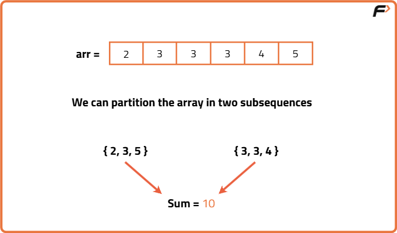

Partition Equal Subset Sum (DP- 15)
Problem Description: Given an array arr of n integers, return true if the array can be partitioned into two subsets such that the sum of elements in both subsets is equal else return false.
Examples
Input: nums = [2, 3, 3, 3, 4, 5] Output: True Explanation: Nums can be partitioned into two subsets of sum 10.
Input: nums = [1, 2, 3, 5] Output: False Explanation: The array cannot be partitioned into equal sum subsets.
Disclaimer: Here is the practice link to help you assess your knowledge better. It's highly recommend trying to solve it before looking at the solution.
Memoization
Algorithm
This question is a slight modification of the problem discussed in Subset-sum equal to target. We need to partition the array into two subsets such that the sum of two subests is equal.
In other words, we can say that we need to find a subset in array which has sum equal to half of the sum of all the elements of the array. This is because, if any subset has half the sum of the array, then the remaining elements will also have the rest half of the sum of array, making the sum of both the subsets equal.
In other words, we can say that we need to find a subset in array which has sum equal to half of the sum of all the elements of the array. This is because, if any subset has half the sum of the array, then the remaining elements will also have the rest half of the sum of array, making the sum of both the subsets equal.
- Calculate the total sum; if it is odd, return false.
- Set the target as half of the total sum.
- Use recursion to check if a subset can reach the target by including or skipping each element.
- At each step, branch into two choices: include the current element (subtract its value from the remaining sum) or skip the current element (keep the remaining sum unchanged).
- Memoize results using the current index and remaining sum to avoid recomputation.
- If remaining sum becomes zero, return true; if it becomes negative or index exceeds bounds, return false.
- Start from index 0 with target sum and return the stored or computed result.
Code
#include <bits/stdc++.h>
using namespace std;
// Function to check if it's possible to partition the array into two subsets with equal sum
bool subsetSumUtil(int ind, int target, vector<int>& arr, vector<vector<int>>& dp) {
// Base case: If the target sum is 0, we found a valid partition
if (target == 0)
return true;
// Base case: If we have considered all elements and the target is still not 0, return false
if (ind == 0)
return arr[0] == target;
// If the result for this state is already calculated, return it
if (dp[ind][target] != -1)
return dp[ind][target];
// Recursive cases
// 1. Exclude the current element
bool notTaken = subsetSumUtil(ind - 1, target, arr, dp);
// 2. Include the current element if it doesn't exceed the target
bool taken = false;
if (arr[ind] <= target)
taken = subsetSumUtil(ind - 1, target - arr[ind], arr, dp);
// Store the result in the DP table and return
return dp[ind][target] = notTaken || taken;
}
// Function to check if the array can be partitioned into two equal subsets
bool canPartition(int n, vector<int>& arr) {
int totSum = 0;
// Calculate the total sum of the array
for (int i = 0; i < n; i++) {
totSum += arr[i];
}
// If the total sum is odd, it cannot be partitioned into two equal subsets
if (totSum % 2 == 1)
return false;
else {
int k = totSum / 2;
// Create a DP table with dimensions n x k+1 and initialize with -1
vector<vector<int>> dp(n, vector<int>(k + 1, -1));
// Call the subsetSumUtil function to check if it's possible to partition
return subsetSumUtil(n - 1, k, arr, dp);
}
}
int main() {
vector<int> arr = {2, 3, 3, 3, 4, 5};
int n = arr.size();
if (canPartition(n, arr))
cout << "The Array can be partitioned into two equal subsets";
else
cout << "The Array cannot be partitioned into two equal subsets";
return 0;
}
Complexity Analysis
Time Complexity: O(N*K), there are total N*K states, where N is the length of array and K is the target sum i.e. Half of the sum of all elements of the array.Space Complexity: O(N*K) + O(N), we use a memo table to avoid recomputation. Extra auxiliary stack space is used for recursion.
Tabulation
Algorithm
In order to avoid extra recursive stack space used in memoization approach, we can simply convert our solution into tabulation approach. We can follow these steps in order to form our tabulation solution:
- Create a 2D table of boolean values with dimensions matching the memoization approach, initially setting all entries to false.
- Initialize the first column to true, since achieving a target sum of zero is always possible regardless of the number of elements considered.
- For the first row, mark as true only the position corresponding to the first element’s value, if it does not exceed the target.
- Use nested loops to fill the table row by row, applying the same inclusion–exclusion logic from the recursive solution but replacing recursive calls with table lookups.
- Continue filling the table until all states are computed.
- The answer will be found at the position in the table corresponding to using all elements to achieve the required target sum.
Code
#include <bits/stdc++.h>
using namespace std;
class Solution {
public:
// Determines if the given array can be split into two subsets
// whose sums are equal using a tabulation DP approach
bool canPartition(int n, vector<int>& arr) {
// Step 1: Calculate the total sum
int totalSum = 0;
for (int i = 0; i < n; i++) {
totalSum += arr[i];
}
// Step 2: If total sum is odd, partition is impossible
if (totalSum % 2 != 0) {
return false;
}
// Step 3: Determine the target sum for each subset
int targetSum = totalSum / 2;
// Step 4: Create DP table and initialize
vector<vector<bool>> dp(n, vector<bool>(targetSum + 1, false));
// Step 5: Base case: sum 0 is always possible
for (int i = 0; i < n; i++) {
dp[i][0] = true;
}
// Step 6: Initialize first row
if (arr[0] <= targetSum) {
dp[0][arr[0]] = true;
}
// Step 7: Fill DP table
for (int index = 1; index < n; index++) {
for (int target = 1; target <= targetSum; target++) {
bool notTaken = dp[index - 1][target];
bool taken = false;
if (arr[index] <= target) {
taken = dp[index - 1][target - arr[index]];
}
dp[index][target] = notTaken || taken;
}
}
// Step 8: Return result
return dp[n - 1][targetSum];
}
};
int main() {
vector<int> arr = {2, 3, 3, 3, 4, 5};
int n = arr.size();
Solution solver;
if (solver.canPartition(n, arr)) {
cout << "The array can be partitioned into two equal subsets";
} else {
cout << "The array cannot be partitioned into two equal subsets";
}
return 0;
}
Complexity Analysis
Time Complexity: O(N*K), there are total N*K states, where N is the length of array and K is the target sum i.e. Half of the sum of all elements of the array.Space Complexity: O(N*K) , we use a 2D DP array to avoid recomputation.
Space Optimization
Algorithm
If we closely look the relation,
dp[ind][target] = dp[ind-1][target] || dp[ind-1][target-arr[ind]]
We see that to calculate a value of a cell of the dp array, we need only the previous row values
This means we do not need to store the entire 2D table, and instead can maintain just two 1D arrays, one representing the previous row and one for the current row. We initialize the first element of both arrays to true, as a sum of zero is always possible. For each new element in the array, we create and fill the current row based on the previous row’s values, then replace the previous row with the current one. After processing all elements, the answer will be found in the last updated previous row at the index equal to the target sum.
We see that to calculate a value of a cell of the dp array, we need only the previous row values
This means we do not need to store the entire 2D table, and instead can maintain just two 1D arrays, one representing the previous row and one for the current row. We initialize the first element of both arrays to true, as a sum of zero is always possible. For each new element in the array, we create and fill the current row based on the previous row’s values, then replace the previous row with the current one. After processing all elements, the answer will be found in the last updated previous row at the index equal to the target sum.
Code
#include <bits/stdc++.h>
using namespace std;
// Function to check if it's possible to partition the array into two subsets with equal sum
bool canPartition(int n, vector<int>& arr) {
int totSum = 0;
// Calculate the total sum of the array
for (int i = 0; i < n; i++) {
totSum += arr[i];
}
// If the total sum is odd, it cannot be partitioned into two equal subsets
if (totSum % 2 == 1)
return false;
else {
int k = totSum / 2;
// Create a vector to represent the previous row of the DP table
vector<bool> prev(k + 1, false);
// Base case: If the target sum is 0, it can be achieved by not selecting any elements
prev[0] = true;
// Initialize the first row based on the first element of the array
if (arr[0] <= k)
prev[arr[0]] = true;
// Fill in the DP table using a bottom-up approach
for (int ind = 1; ind < n; ind++) {
// Create a vector to represent the current row of the DP table
vector<bool> cur(k + 1, false);
cur[0] = true;
for (int target = 1; target <= k; target++) {
// Exclude the current element
bool notTaken = prev[target];
// Include the current element if it doesn't exceed the target
bool taken = false;
if (arr[ind] <= target)
taken = prev[target - arr[ind]];
// Update the current row of the DP table
cur[target] = notTaken || taken;
}
// Set the current row as the previous row for the next iteration
prev = cur;
}
// The final result is in the last cell of the previous row of the DP table
return prev[k];
}
}
int main() {
vector<int> arr = {2, 3, 3, 3, 4, 5};
int n = arr.size();
if (canPartition(n, arr))
cout << "The Array can be partitioned into two equal subsets";
else
cout << "The Array cannot be partitioned into two equal subsets";
return 0;
}Complexity Analysis
Time Complexity: O(N*K), there are total N*K states, where N is the length of array and K is the target sum i.e. Half of the sum of all elements of the array.Space Complexity: O(N), we use two 1D arrays to store value of previous row and current row.